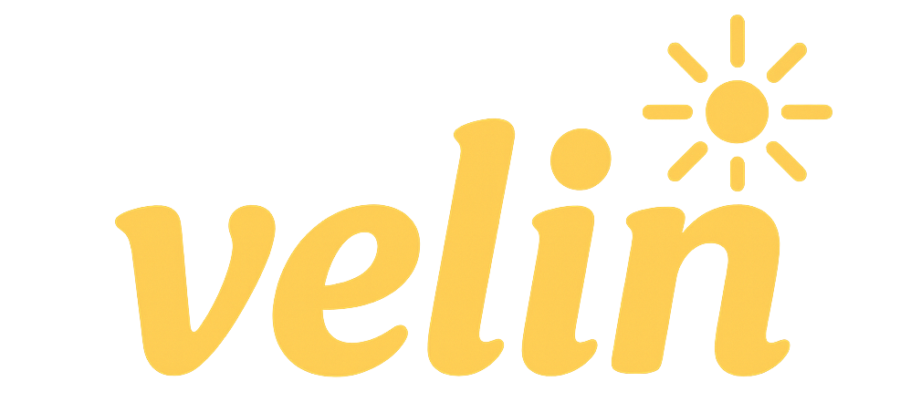
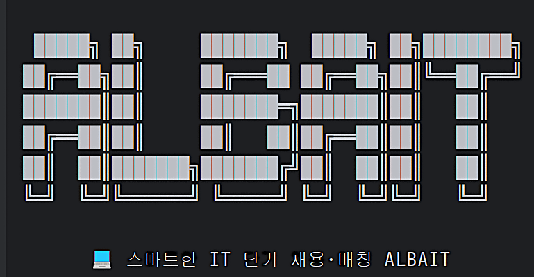
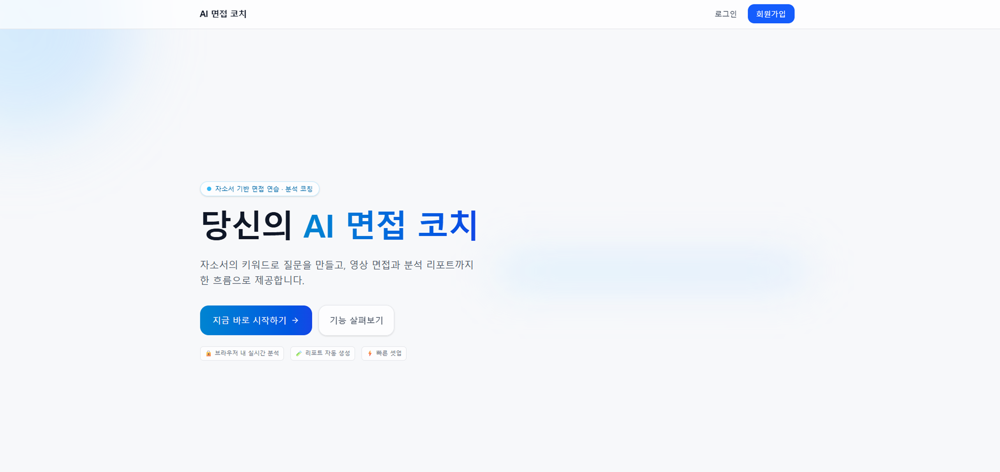
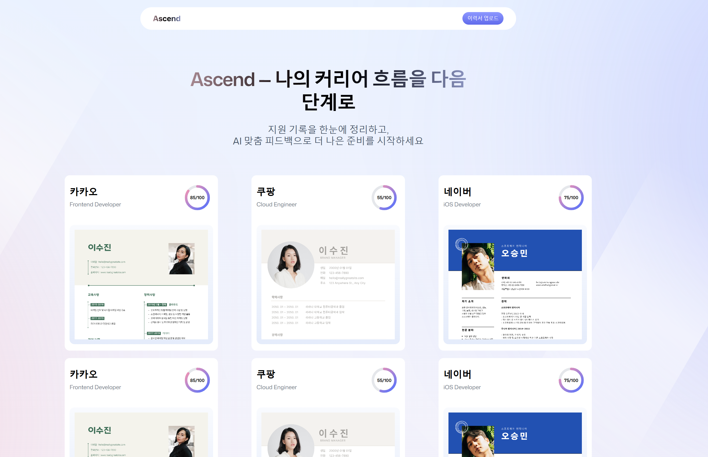
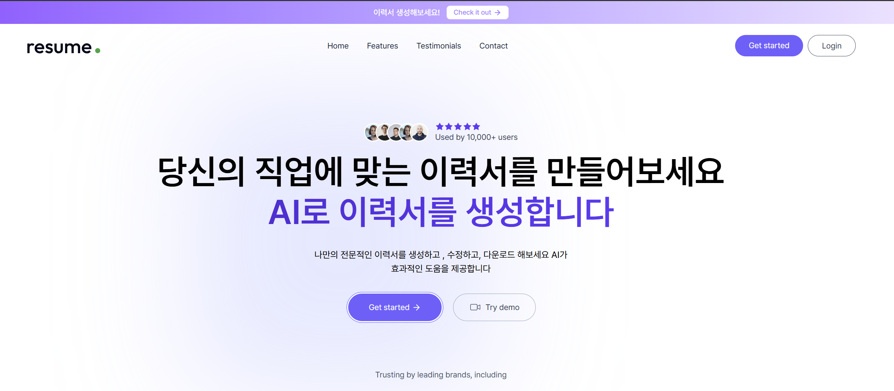
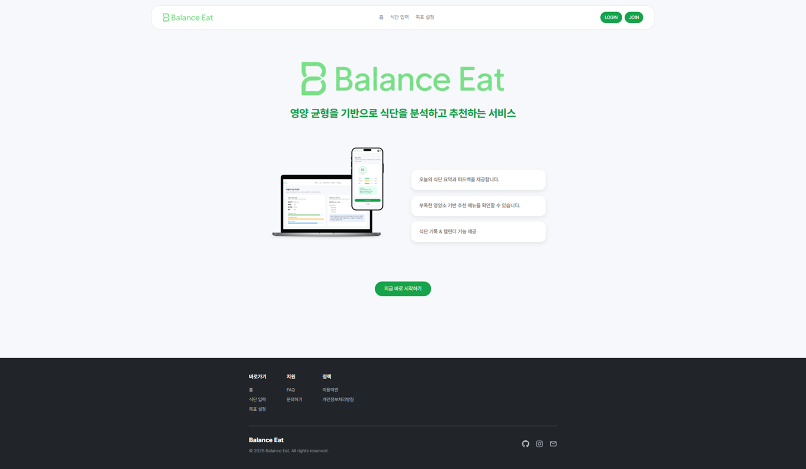
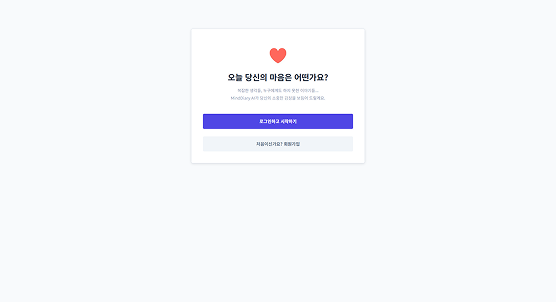

문제에서 배움을 찾고 성장하는
김은혜 입니다
JUNIOR DEVELOPER (WEB · BACKEND · AI)
Portfolio
PROFESSIONAL PROFILE
저는 새로운 시도와 도전을 통해 문제를 발견하고 해결하며 성장해왔습니다.
작은 단위로 나누어 해결하고 개선을 반복한 경험은 저를 더 나은 방향으로 이끌었고,
앞으로도 이런 태도를 바탕으로 계속 발전해 나가겠습니다.
EXPERIENCE
솔루션팀 · 머신 비전 파트
- 비전 셋팅 및 카메라 파라미터 조정 지원
- C# WinForms UI 일부 수정 및 테스트
- 테스트 결과 정리 및 개선 사항 보고
쿠팡 물류 · 전산 / 관리
- 단기 인력 배치와 스케줄 조율
- 출고 전산 흐름 점검 및 마감 관리
- 마감 시점의 소통·조율 업무
PROJECTS

Velin — AI Interview Prep
2025.08–2025.09 (개인)
면접 질문·근거·체크리스트 자동 생성, 세션별 분석을 제공하는 웹 서비스

ALBAIT — 콘솔 구인·구직 실습
2025.04–2025.05 (개인)
콘솔에서 회원/공고/지원 CRUD와 관리자 통계를 구현한 Java·Oracle 실습

Interview Simulator
2025.09–2025.11 (팀)
AI 면접 질문 생성, STT, 감정/집중도 시각화, 세션 리포트 제공

Ascend — 이력서 코치 웹
2025.10–2025.12 (개인)
이력서 업로드 → AI 항목별 점수·피드백·키워드 개선 제안

ResumeBuilder — 이력서 작성 지원
2025.10–2025.11 (개인)
섹센별 입력 가이드와 실시간 미리보기로 작성 효율 개선

BalanceEat — AI 식단 관리
2025.10–2025.11 (팀)
Gemini AI 기반 식단 추천·기록·시각화 서비스

Daily Emotion Log — 감정 기록
2025.12 (팀)
감정 기록·AI 피드백·패턴 시각화 웹 서비스